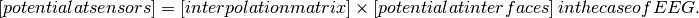
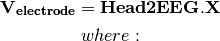
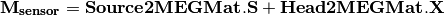
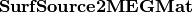

OpenMEEG
A C++ package for low-frequency bio-electromagnetism
solving forward problems in the field of EEG and MEG
A C++ package for low-frequency bio-electromagnetism
solving forward problems in the field of EEG and MEG


The forward problem consists in simulating the electric potential (EEG) and magnetic fields (MEG) on the sensors due to electrical sources within the brain.

The potential is computed on all surfaces of the head model
(scalp, outer skull and inner skull for a three-layer model). Let
 contain the values of the potential on the
discretized surfaces, as well as the values of the normal current. The
Boundary Element Method leads to a linear system:
contain the values of the potential on the
discretized surfaces, as well as the values of the normal current. The
Boundary Element Method leads to a linear system:
See sections Head Matrix assembly :, Source matrix assembly : and matrix inversion:.
The matrices relating the head model surfaces and the sensor data must be computed. These are different for EEG and for MEG. For EEG, the potential is interpolated from the surface discretization points to the sensor positions through a simple linear transformation:

For MEG, the Biot and Savart equation allows to identify two contributions to the magnetic field: one which comes directly from the sources, and an ohmic contribution which comes from the volume conductor. Hence two linear transformations must be computed, one from the source locations to MEG sensors, the other from the head model interfaces to the MEG sensors.
See section [sect: command assemble sensors].
: the matrix relating the sources (at fixed positions and orientations)
to the sensors is now ready to be computed (section [sect: command
gain]). This matrix is called the gain matrix and is denoted
 . The gain matrix is then applied to the source
activation to simulate the forward problem (section [sect: command
direct]).
. The gain matrix is then applied to the source
activation to simulate the forward problem (section [sect: command
direct]).
This chapter describes the type of data that is required to run a forward problem with OpenMEEG. More detail on the data format is provided in Appendix [chap:format].
conductivity. These meshes generally represent:
The recommended mesh size is approximately 600 to 800 points per surface.
sources, a source mesh describes their support. This is a detailed mesh generally covering the whole cortex. The mesh size should not exceed 35 000 points. The source amplitude is represented as continuous, and linear on each of the mesh triangles. The source orientation is modeled as piecewise constant, normal to each of the mesh triangles.

Isolated sources are the superposition of current dipoles, each of which is defined by its position and its moment.
: For EEG, the sensors are defined by the list of the x-y-z coordinates of the electrode positions. The electrodes are considered punctual and are called patches. The MEG sensor description is more complex, see Appendix [chap:format].
In the following, the binaries in , the options in , the inputs are in black and the outputs in .
Inputs:
Output:
The symmetric format only stores the lower half of a matrix.
Note: the abbreviated option names or can be used instead of .
Inputs:
subject.geom: geometry description file (see Appendix [sec:geom])
subject.cond: conductivity description file (see Appendix [sec:cond])
the source(s):
] dipolePosition.dip: dipole description file (list of coordinates and orientations) (see Appendix [sec:dipoles])
] sourcemesh: source mesh (accepted formats: *.tri or *.mesh of BrainVisa, or *.vtk)
Output:
Inputs:
Output:
[sect: command assemble sensors]
A linear interpolation is computed which relates X to the electrode potential through the linear transformation:

is the column-vector containing the values of the
potential and the normal current on all the surface of the model,Inputs:
Sortie:
The sparse format allows to store efficiently matrices containing a small proportion of non-zero values.
Note: the abbreviated option names or can be used instead of .
in section []. The magnetic field is related both to the sources directly, as well as to the electric potential, according to:

Output:
Note: the abbreviated option names or can be used instead of .
the source(s):
] dipolePosition.dip: dipole description file (list of coordinates and orientations) (see Appendix [sec:dipoles])
] sourcemesh: source mesh (accepted formats: *.tri or *.mesh of BrainVisa, or *.vtk)
sensorpositions.txt: positions and orientations of MEG sensors (see Appendix [sec:sensors])
Output:
or : binary file containing 
[sect: command gain]
The gain matrix represents the linear transformation relating the activation of sources, at predefined positions and orientations to the values of the fields of interest (electric potential or magnetic field) at predefined sensor positions (and orientations for MEG).
Output:
Output:
[sect: command direct]
Once the gain matrix is computed, the forward problem amounts to defining the source activation, and applying the gain matrix to this activation.
Inputs:
Output:
[chap:format]
[sec:geom] The geometry description file provides
The geometry description file should have as extension: *.geom

“Meshes paths” can be
For the meshes, the following formats are allowed :
[sec:cond]
corresponding to each domain listed in the Geometry Description File (section [sec:geom]). | The file extension should be: *.cond .

Sources are defined by their geometry (position and orientation) and their magnitude. OpenMEEG handles two types of source models: isolated dipoles, or distributed dipoles: these two models differ in their geometry description.
[sec:dipoles]
Isolated dipoles are represented by a text file (extension *.dip or *.txt), in which each line defines a dipole position and orientation, encoded in 6 real values:
The following example shows a file describing 5 isolated dipoles:

The referential of the coordinates should be the same as for the meshes (the MR coordinates in general).
Distributed dipoles are supported on a mesh, whose format must be *.mesh, *.tri, *.vtk, *.bnd, *.off, or *.gii.
[sec:activ]
Source activation files are text files, in which each line corresponds to a source, and each column to a time sample.
Example for isolated dipoles:

[sec:sensors]
The sensor definition is provided in a text file, in which each line provides the position of the sensor, and additional information such as its orientation or its name. More precisely, there are 5 options for defining sensors:
An example of MEG sensor description: